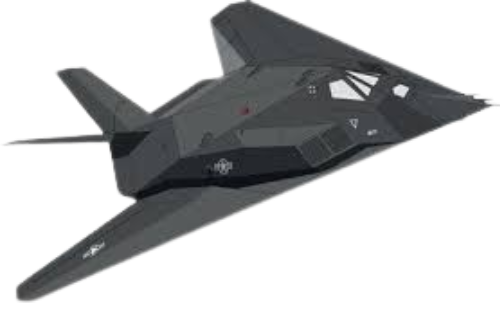

F-117 Nighthawk
 Primary function: Stealth attack aircraft
Manufacturer: Lockheed (Skunk Works)
First flight: June 18, 1981
Entered service: October 1983
Retired: 2008 (some kept flying for testing)
Crew: 1
Dimensions:
- Length: 65.9 ft (20.1 m)
- Wingspan: 43.4 ft (13.2 m)
- Height: 12.5 ft (3.8 m)
Weight:
- Empty weight: ~29,500 lbs (13,380 kg)
- Maximum takeoff weight: 52,500 lbs (23,810 kg)
Performance:
- Engines: 2 × General Electric F404-F1D2 turbofans
- Thrust: 10,600 lbf (47 kN) each
- Maximum speed: Mach 0.92 (~617 mph / 993 km/h)
- Range: ~1,070 miles (1,720 km) unrefueled
- Ferry range: ~2,400 miles (3,900 km) with refueling
- Service ceiling: 45,000 ft (13,700 m)
Armament:
- Internal weapons bay only (stealth design)
- Could carry up to 5,000 lbs (2,268 kg) of weapons:
• 2 × 2,000 lb GBU-27 laser-guided bombs
• or other precision-guided munitions
Special features:
- First operational aircraft designed with stealth in mind
- Faceted surfaces to scatter radar waves
- Radar cross-section similar to a small bird
- Used composite materials + radar-absorbing coatings
- No radar onboard (to stay stealthy)
Notable:
- Nicknamed “Wobbly Goblin” by pilots
- Played a key role in the Gulf War (1991) and Kosovo conflict (1999)
- One was shot down in 1999 by a Serbian SAM — the only F-117 lost in combat